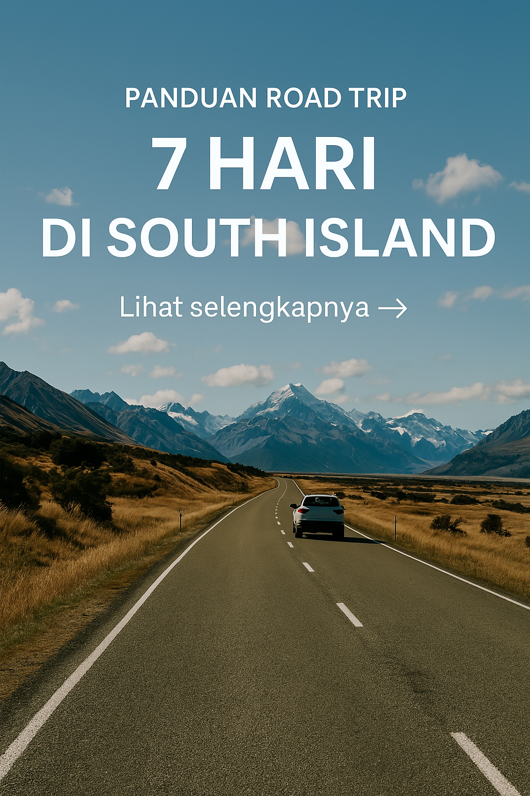

Panduan Road Trip 7 Hari di South Island
Ditulis oleh Garuda Kiwi Tour • 4 April 2025
"Setiap kilometer di South Island adalah pemandangan kartu pos."
Road trip di South Island New Zealand adalah pengalaman yang wajib dicoba! Dari pegunungan bersalju, danau biru, sampai kota kecil yang penuh pesona. Berikut panduan 7 hari terbaik untuk menjelajahi South Island:
Hari 1: Christchurch
Mulai dari kota paling besar di South Island. Jangan lewatkan Botanic Gardens dan street art di pusat kota.
Hari 2: Lake Tekapo & Mt Cook
Lihat Church of the Good Shepherd dan lanjut ke Aoraki/Mt Cook untuk menikmati keagungan gunung tertinggi di NZ.
Hari 3: Wanaka
Berhenti sejenak di Lindis Pass dan nikmati ketenangan Danau Wanaka. Foto di pohon terkenal "That Wanaka Tree"!
Hari 4–5: Queenstown
Kota penuh petualangan! Coba skyline gondola, bungy jump, atau sekadar menikmati Fergburger yang legendaris.
Hari 6: Milford Sound
Naik cruise dan jelajahi fjord yang spektakuler—air terjun, lumba-lumba, dan tebing tinggi akan menyambutmu.
Hari 7: Kembali ke Christchurch via Dunedin
Perjalanan kembali bisa lewat rute timur untuk mengunjungi Dunedin dan Oamaru sebelum kembali ke Christchurch.
- Selalu isi bensin sebelum masuk area pegunungan
- Unduh offline maps sebelum berangkat
- Bawa powerbank dan colokan mobil
🚗 Siap Road Trip Tanpa Ribet?
Pesan paket tur self-drive atau private road trip kami sekarang! Semua sudah kami atur, kamu tinggal jalan.
Lihat Pilihan Tour